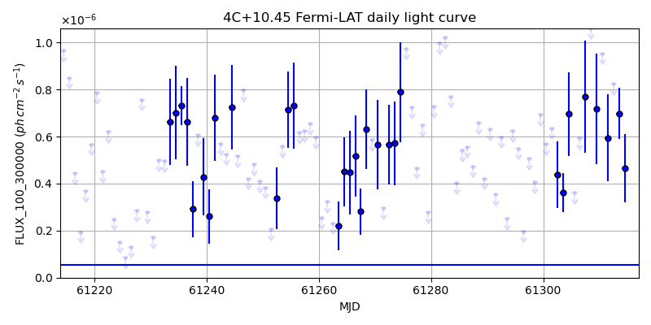
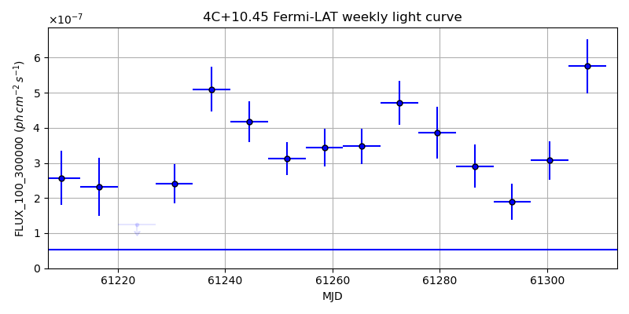
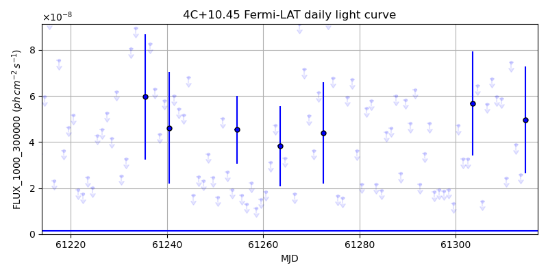
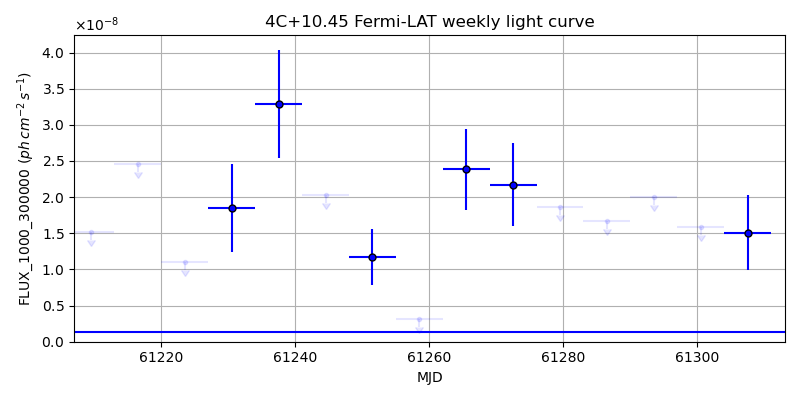

LAT Lightcurve site: https://fermi.gsfc.nasa.gov/ssc/data/access/lat/msl_lc/source/4C_p10d45
NED: Query
Time of last update of this page: UT: 2026-10-02 15:22 (MJD: 61315.640)
| Property | Value |
|---|---|
| R.A. | 16:08:46.32 |
| Dec. | 10:29:06.0 |
| z | 1.233 |
| 3FGL SpectrumType | PowerLaw |
| 3FGL PL Index | 2.62 |
| 3FGL Flux_100_300000 | 5.37e-08 1 / (s cm2) |
| 3FGL Flux_1000_300000 | 1.29e-09 1 / (s cm2) |
| 3FGL Flux >200 GeV | 2.43e-13 1 / (s cm2) |
| 3FGL Extrap. Crab >200 GeV | 0.00 |
| 3FGL Flux After EBL Absorption >200GeV | 1.51e-15 1 / (s cm2) |
| 3FGL EBL Crab Fraction >200GeV | 0.00 |

| MJD | dMJD | Flux | dFlux | Frac3FGL | FracCrab>200GeV | EBLFracCrab>200GeV |
|---|---|---|---|---|---|---|
| 61310.50 | 0.50 | 9.54e-07 | 0.00e+00 | 0.00 | 0.00 | 0.00 |
| 61311.50 | 0.50 | 5.94e-07 | 1.85e-07 | 11.05 | 0.01 | 0.00 |
| 61312.50 | 0.50 | 8.24e-07 | 0.00e+00 | 0.00 | 0.00 | 0.00 |
| 61313.50 | 0.50 | 6.98e-07 | 1.09e-07 | 13.00 | 0.01 | 0.00 |
| 61314.50 | 0.50 | 4.66e-07 | 1.45e-07 | 8.68 | 0.01 | 0.00 |

| MJD | dMJD | Flux | dFlux | Frac3FGL | FracCrab>200GeV | EBLFracCrab>200GeV |
|---|---|---|---|---|---|---|
| 61279.50 | 3.50 | 3.87e-07 | 7.41e-08 | 7.20 | 0.01 | 0.00 |
| 61286.50 | 3.50 | 2.91e-07 | 6.06e-08 | 5.42 | 0.01 | 0.00 |
| 61293.50 | 3.50 | 1.89e-07 | 5.16e-08 | 3.52 | 0.00 | 0.00 |
| 61300.50 | 3.50 | 3.07e-07 | 5.58e-08 | 5.71 | 0.01 | 0.00 |
| 61307.50 | 3.50 | 5.76e-07 | 7.67e-08 | 10.72 | 0.01 | 0.00 |

| MJD | dMJD | Flux | dFlux | Frac3FGL | FracCrab>200GeV | EBLFracCrab>200GeV |
|---|---|---|---|---|---|---|
| 61310.50 | 0.50 | 2.44e-08 | 0.00e+00 | 0.00 | 0.00 | 0.00 |
| 61311.50 | 0.50 | 7.46e-08 | 0.00e+00 | 0.00 | 0.00 | 0.00 |
| 61312.50 | 0.50 | 3.88e-08 | 0.00e+00 | 0.00 | 0.00 | 0.00 |
| 61313.50 | 0.50 | 2.59e-08 | 0.00e+00 | 0.00 | 0.00 | 0.00 |
| 61314.50 | 0.50 | 4.96e-08 | 2.33e-08 | 38.64 | 0.04 | 0.00 |

| MJD | dMJD | Flux | dFlux | Frac3FGL | FracCrab>200GeV | EBLFracCrab>200GeV |
|---|---|---|---|---|---|---|
| 61279.50 | 3.50 | 1.86e-08 | 0.00e+00 | 0.00 | 0.00 | 0.00 |
| 61286.50 | 3.50 | 1.66e-08 | 0.00e+00 | 0.00 | 0.00 | 0.00 |
| 61293.50 | 3.50 | 2.00e-08 | 0.00e+00 | 0.00 | 0.00 | 0.00 |
| 61300.50 | 3.50 | 1.59e-08 | 0.00e+00 | 0.00 | 0.00 | 0.00 |
| 61307.50 | 3.50 | 1.51e-08 | 5.19e-09 | 11.75 | 0.01 | 0.00 |
--------------------------------------------------------- Using user-supplied coords: 16:08:46.32 10:29:06.0 2000 --------------------------------------------------------- FLWO UT night of: 2026-10-03 Local Sid. @ Midnight: 00:24 Sunset (-15.0) (local, UT): 19:14 02:14 Sunrise (-15.0) (local, UT): 05:12 12:12 Moonrise (local, UT): 22:48 05:48 Moonset (local, UT): Moon phase: 0.53 --------------------------------------------------------- AzTime LSID UT Obj_el Obj_az Mn_el Mn_az Sep. --------------------------------------------------------- 19:14 19:37 02:14 37.8 257.9 -28.5 20.1 131.5 19:44 20:07 02:44 31.5 262.6 -26.2 26.7 131.2 20:14 20:37 03:14 25.1 266.9 -23.2 32.8 130.9 20:44 21:07 03:44 18.7 270.9 -19.6 38.5 130.7 21:14 21:37 04:14 12.4 274.8 -15.7 43.6 130.4 21:44 22:07 04:44 6.1 278.6 -11.3 48.4 130.1 22:14 22:37 05:14 0.2 282.5 -6.5 52.7 129.9 22:44 23:07 05:44 -6.4 286.5 -0.8 56.7 129.6 23:14 23:37 06:14 -12.6 290.8 3.8 60.4 129.4 23:44 00:07 06:44 -18.5 295.5 9.1 63.9 129.1 00:14 00:38 07:14 -24.1 300.6 14.6 67.1 128.9 00:44 01:08 07:44 -29.5 306.4 20.3 70.2 128.7 01:14 01:38 08:14 -34.4 312.9 26.1 73.1 128.5 01:44 02:08 08:44 -38.8 320.3 32.1 76.0 128.3 02:14 02:38 09:14 -42.5 328.7 38.1 78.8 128.1 02:44 03:08 09:44 -45.4 338.2 44.2 81.7 127.9 03:14 03:38 10:14 -47.2 348.6 50.3 84.8 127.7 03:44 04:08 10:44 -47.9 359.5 56.5 88.1 127.6 04:14 04:38 11:14 -47.4 10.4 62.7 91.9 127.4 04:44 05:08 11:44 -45.6 20.9 68.9 96.9 127.3 05:12 05:37 12:12 -43.0 30.0 74.7 103.8 127.1 --------------------------------------------------------- Dark hours >55 deg.: 0.00